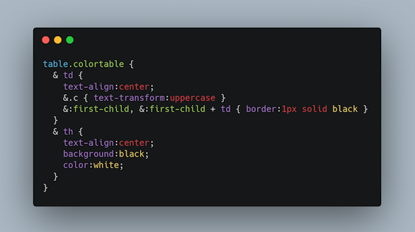

The @w3c #WebStandard #MathML (v3, 2nd edition) has been translated into #Japanese: http://takamu.sakura.ne.jp/mathml3-ja/index.html Thank you @y_takamu! #html5j #dotHTML5 #w3c_keio #translation https://twitter.com/y_takamu/status/1412064534093721607
https://twitter.com/w3cdevs/status/1425006801733435393The @w3c #WebStandard "#JSON_LD 1.1 Framing" has been translated into #Japanese: https://www.asahi-net.or.jp/~ax2s-kmtn/internet/lod/REC-json-ld11-framing-20200716.html Thank you @omnidirect ! #html5j #dotHTML5 #w3c_keio #translation
https://twitter.com/w3cdevs/status/1425009204595679261The @w3c #WebStandards "#WAI_ARIA Graphics Module" has been translated into #Japanese: https://momdo.github.io/graphics-aria-1.0/ Thank you @momdo_! #html5j #dotHTML5 #w3c_keio #translation https://twitter.com/w3c/status/1425668597561573376
https://twitter.com/w3cdevs/status/1425783685161406471The @w3c #WebStandard "Accessible Name and Description Computation 1.1" has been translated into #Japanese: https://momdo.github.io/accname-1.1/ Thank you @momdo_! #html5j #dotHTML5 #w3c_keio #a11y #translation https://twitter.com/w3c/status/1425668599910387715
https://twitter.com/w3cdevs/status/1425784318849396738Another #translation into #Japanese: the @w3c
#WebStandard "Accessibility Conformance Testing (ACT) Rules Format 1.0": https://momdo.github.io/act-rules-format-1.0/ Thank you again @momdo_ ! #a11y #html5j #dotHTML5 #w3c_keio #translation https://twitter.com/w3c/status/1425668593916776449
https://twitter.com/w3cdevs/status/1425784989447331844🆕! @w3c and @smpteconnect organize a joint workshop on professional #media production on the #Web, 9-18 Nov. 2021 https://www.w3.org/2021/03/media-production-workshop/ https://twitter.com/w3c/status/1429722134629306372
This workshop is scoped to the professional media production communities using the #WebPlatform, incl. #editing, quality control, grading/color correction, #dailies, #VisualEffects, #sound, #mastering, translation and servicing: https://www.w3.org/2021/03/media-production-workshop/
https://twitter.com/w3cdevs/status/1429816222892318726Other media-related specifications include Media Session to integrate web #playback experiences with notification areas, or #WebCodecs to expose low-level knobs to audio/video encoding/decoding
https://twitter.com/w3cdevs/status/1429816231515861000Existing standardized Web technologies for media streaming are MS/EM extensions, #WebRTC for live streaming, #WebAudio #API for processing and synthesizing audio, and also #WebAssembly used to ship efficient processing code in situations where #browsers don't offer native support
https://twitter.com/w3cdevs/status/1429816229188063246Interested parties are invited to submit a talk before 15 October 2021: https://www.w3.org/2021/03/media-production-workshop/speakers.html
https://twitter.com/w3cdevs/status/1429816233768144902The workshop's attendance is free for all invited participants, and is open to the public, whether or not @W3C/@smpteconnect members
https://twitter.com/w3cdevs/status/1429816236163096578#MathML is a markup language for mathematical and scientific content on the Web and beyond. The Math #WorkingGroup charter was approved last April https://twitter.com/w3cdevs/status/1359892579148513280
This document defines a core subset of #MathML that can be reliably displayed in Web #browsers. It provides efficient, native and interoperable rendering of mathematical notations for authors and users #timetogiveinput https://www.w3.org/TR/2021/WD-mathml-core-20210816/ https://twitter.com/w3c/status/1425014028674424864
https://twitter.com/w3cdevs/status/1429839186278981647#MathML Core builds on MathML3 and focuses on visual rendering. It defines its integration in the modern Web Platform wrt #HTML and #SVG, #CSS styling, DOM, #JavaScript, etc. Read more in the explainer: https://github.com/w3c/mathml-core/blob/main/docs/explainer.md
https://twitter.com/w3cdevs/status/1429839188627759106The #MathML #WorkingGroup is one of the oldest @w3c Working Groups. The need for mathematical rendering on the Web was evident from the earliest days of the Web at #CERN (1989)

https://twitter.com/w3cdevs/status/1429839193992310789For #MathML Core, feedback is welcome on #GitHub! Please file your issue(s) there: https://github.com/w3c/mathml-core/issues/
https://twitter.com/w3cdevs/status/1429839195950944256Virtual keyboards are used when hardware keyboards aren't an option (e.g. on smartphones) - a critical aspect of making them usable is to ensure the editable area remains visible when the keyboard scrolls the active view
This is the first document published by the Web Editing #WorkingGroup https://www.w3.org/TR/2021/WD-virtual-keyboard-20210824/ #timetogiveinput https://twitter.com/w3c/status/1430101104646369283
https://twitter.com/w3cdevs/status/1432348198245392385Current and proposed behaviors are shown below for virtual keyboard on single-touch screen device:

https://twitter.com/w3cdevs/status/1432348202666168321This VirtualKeyboard #API helps #developers enable better customization of their Web page's content and experiences via #CSS and #JavaScript when a virtual keyboard is in use
https://twitter.com/w3cdevs/status/1432348199956647936Learn more about the @w3c Web Editing #WorkingGroup, one of the most recent additions to our roster https://twitter.com/w3cdevs/status/1407671176416174082
https://twitter.com/w3cdevs/status/1432348206462029830Find more details in the explainer https://github.com/MicrosoftEdge/MSEdgeExplainers/blob/main/VirtualKeyboardAPI/explainer.md
and file issues and/or comments on #GitHub at https://github.com/w3c/virtual-keyboard/issues/
https://twitter.com/w3cdevs/status/1432348204687839233And if you want to understand more of the history behind this work, watch some of the early discussions on this proposal shared last year during #w3cTPAC https://twitter.com/w3cdevs/status/1331278157589188608
https://twitter.com/w3cdevs/status/1432348208496357380#CSS Nesting aims to give advanced users new ways to group and shorten style rules. It implements natively some of the features provided by preprocessors like #SASS or LESS #timetogiveinput https://twitter.com/w3c/status/1432624166205857793
Besides removing duplication, the grouping of related rules improves the readability and maintainability of the resulting #CSS. The specification defines a new selector, the "nesting selector", written as an ASCII ampersand "&"
https://twitter.com/w3cdevs/status/1432630850768801797Please send feedback by filing #GitHub issues, incl. [css nesting] in the title: https://github.com/w3c/csswg-drafts/issues
https://twitter.com/w3cdevs/status/1432630858209447941The @ImmersiveWebW3C is releasing 3 first public Working Drafts today to enrich the augmented reality #AR capabilities of #WebXR #timetogiveinput https://twitter.com/w3c/status/1432624172384100359
1️⃣ Depth Sensing provides a depth #map from the camera feed to integrate realistically #virtual objects into the real-world environment, e.g. to manage their collisions. Watch @AdaRoseCannon demo and explanation of the Depth Sensing https://youtu.be/Vxp_qDyrj3k
https://twitter.com/w3cdevs/status/1432691596659675137... bring feedback and monitor progress on the Depth Sensing spec. in its #GitHub repo: https://github.com/immersive-web/depth-sensing/
https://twitter.com/w3cdevs/status/1432691601818718208Bring feedback and monitor progress on the DOM Overlays spec in its #GitHub repo: https://github.com/immersive-web/dom-overlays
https://twitter.com/w3cdevs/status/14326916064912097352️⃣ DOM Overlays allows to reuse #HTML & #CSS to overlay interactive content on top an #AR view, e.g. to build a user interface. Watch @AdaRoseCannon demo and explanation of the DOM Overlays #API https://youtu.be/iQDDa549TN8
https://twitter.com/w3cdevs/status/1432691604146593792... and bring feedback and monitor progress on the #WebXR Hit Test spec in its #GitHub repo: https://github.com/immersive-web/hit-test
https://twitter.com/w3cdevs/status/14326916111427051533️⃣ #WebXR Hit Test allows to use #raycasting in #AR to determine where and how to position virtual objects in the real world. Watch @AdaRoseCannon demo and explanation of the #WebXR Hit Test: https://youtu.be/Zz6_b2PNtTI
https://twitter.com/w3cdevs/status/1432691608768679938To discover more of the many features @ImmersiveWebW3C is bringing to #WebXR, watch @AdaRoseCannon's full talk "WebXR: What you can do today & what's coming tomorrow"
https://youtu.be/t-uk8InHte4
https://twitter.com/w3cdevs/status/1432691613982248962Secure Payment Confirmation combines built-in browser payment primitives with Web Authentication #WebAuthn to enable 2-factor confirmation of on-line payments, as an alternative to e.g. SMS-based validation https://twitter.com/w3c/status/1432626596490383364
This builds on a successful experiment run earlier this year showing good results in terms of improved UX https://twitter.com/w3cdevs/status/1375455133828575233
https://twitter.com/w3cdevs/status/1432757243863252994The Secure Payment Confirmation work happens on github - bring your input and feedback there #timetogiveinput https://github.com/w3c/secure-payment-confirmation/
https://twitter.com/w3cdevs/status/1432757250226012162